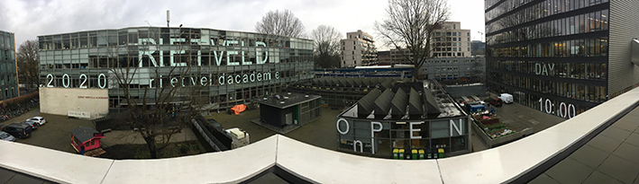
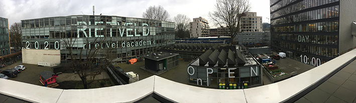

How do you feel about the Covid-19 pandemic affecting your graduation?
M I feel great.
E It also feels like this is the last time I could try something big, different than publication and fail with it...like I failed a publication several times but I want to fail in another way, like if I were to do something sculptural or something physical [it’s uncertain whether there will be a physical graduation show, at the moment our department plan on releasing a publication].
M And it's also not necessarily cancelled, there's a lot of uncertainty, which I mean, is affecting the way that we work on our projects, and it's also really changing the world afterwards, so I feel actually quite grateful and lucky that our graduation happens at a really historical moment therefore how we react is marked in history, how we react to the new parameters of the world and to the parameters that the covid pandemic has given us is necessarily part of the work and that makes it historical, so I think we're actually extremely lucky in a way.
E On one hand definitely, I also feel the same way. Of course, as you said, the historical part is a big plus, but I also think even though it's easy to find advantages, it's mentally a bit hard to work, it's hard to stay equally productive, even though it feels like you’re working more, it's somehow not the same progress.
M Yeah, it's been difficult to actually like... work.
V It also makes me wonder whether an exhibition is necessarily the ideal format for graphic design works, or maybe just my works.... I think the solution that our department came up with is quite obvious in a good way, it makes sense to me.
And the fact that your identity for the Open Day is still visible on the school building? (Normally the identity only stays visible for a few days)
M In terms of the Open Day, the pandemic definitely had an effect on taking down the campaign. The administration is quite angry with us, we were supposed to take the vinyls down a long time ago...
V But the videos, did you see them?
M Yeah it was so good!
V It looks like the ruins of the school and that's like the only thing that's left.
M I was like this is so iconic, it looked so great in those video backgrounds, because when they were making those covid-19 announcements and it was the Rietveld building and it said RIETVELD huge behind it, it's like a graphic design blessing from the gods that it was still there.
E It looks better now because they closed the blinds.
V Yeah true, the curtains are completely gray.
E And that's something we didn't expect from our design, but when it's closed it's like a completely new design, it works in a different way.
M It was just such a good video background...so iconic!
V They wanted us to keep it a little bit after the Open Day in the first place, but now it has been there for way longer.
M Yeah, so actually it served a purpose as communicating to outsiders beyond Open Day, it was a really iconic advertisement for the school.


.JPG)
 

.JPG)
 CLARISA
CLARISA